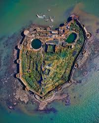
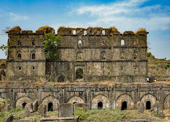
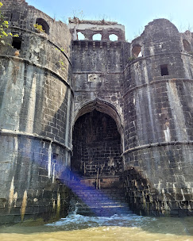
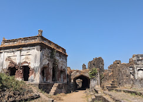
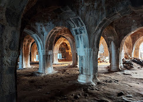

मुरूड जंजीरा किल्ला
Location : Click Here For Google Map
- माहिती
- मुरूड जंजीरा किल्ला महाराष्ट्र राज्याच्या रायगड जिल्ह्यात स्थित एक ऐतिहासिक किल्ला आहे. किल्ला अरबी समुद्राच्या किनाऱ्यावर वसलेला असून, तो एक अद्वितीय किल्ला आहे जो समुद्रात स्थित आहे. या किल्ल्याचे मुख्य आकर्षण म्हणजे त्याची स्थानिक भूगोल आणि त्याचे सामरिक महत्त्व.
किल्ल्याची बांधणी १५व्या शतकात आदिलशाही सुलतानांनी केली होती. किल्ल्याचे रक्षण करण्यासाठी समुद्राच्या जवळ असलेल्या या किल्ल्याच्या भिंती, टाक्या आणि गोपनीय मार्गांची रचना अत्यंत सक्षम आणि सुरक्षीत होती. किल्ला किल्ल्याच्या टोकावर वसलेले असलेल्या एका छोट्या बेटावर आहे, जो त्याच्या समयाच्या संरक्षणात्मक गरजांसाठी महत्त्वपूर्ण होता.
मुरूड जंजीरा किल्ला त्याच्या समुद्र किनाऱ्याच्या रक्षणासाठी प्रसिद्ध आहे. किल्ल्याच्या शिखरावरून समुद्राचे दृश्य एक अभूतपूर्व सौंदर्य प्रदान करते. किल्ल्याची संपूर्ण रचना, त्याची शौर्य कथा आणि त्याच्या ऐतिहासिक महत्त्वामुळे हा किल्ला पर्यटकोंचे लक्ष वेधून घेतो.
आजकल मुरूड जंजीरा किल्ला एक प्रसिद्ध पर्यटन स्थळ आहे, जिथे पर्यटक समुद्रकाठील सुरक्षात्मक संरचना, भव्य किल्ला आणि इतिहास अनुभवण्यासाठी येतात.
Explore the historical beauty




